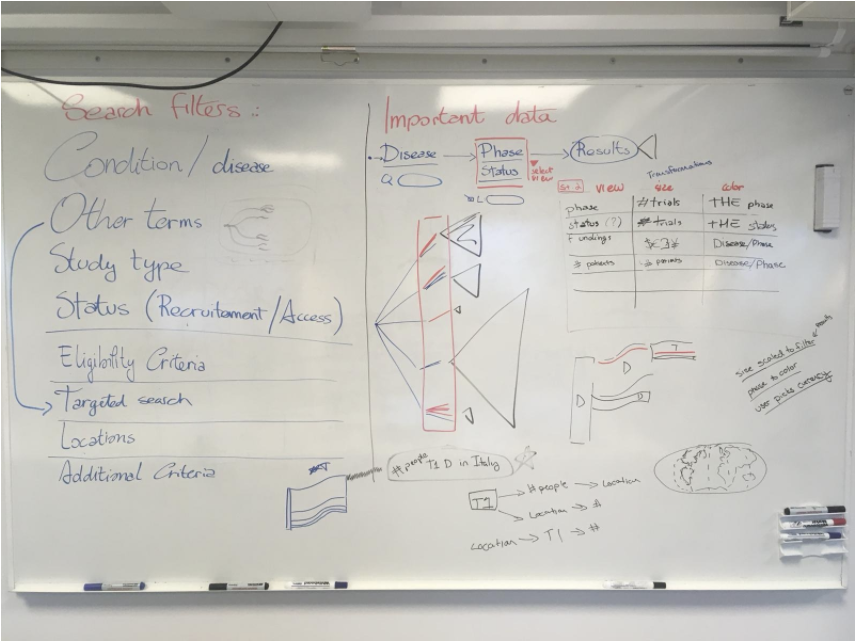

Clinical Trials Visualization
Explore 330,531 research studies in all 50 states and in 209 countries.
The database ClinicalTrials.gov is a database of privately and publicly funded clinical studies conducted around the world.
Project Eir can be adapted to your needs and we are dedicated to find exactly what you are looking for.
Project Eir is a project part of the course DH2321 Information Visualization at KTH. For this project, we needed to get in contanct with companies and researchers and develop a visualization that suited their needs.
The main goal of Project Eir is to allow researchers and medical personnel to explore trials and discover trends of clinical data
For this project, we had three main stakeholders, researchers, civilians, and medical personnel. Due to the short amount of time, we decided to focus on researches exclusively. After a meeting with one of the stakeholders, a researcher working at Karolinska Institutet, we defined the main goal of the project is to provide a good overview of the data as well as detailed information about a specific clinical trial. Another important task was to find trends in the field of research.
We brainstormed a lot about visual mapping. Out data scaled extremely fast from one dimension to the next. There are around twenty categories and in the text level thousands of diseases, and every disease could have all the way from 1 to thousands of trails. In total does our database include over 2.5 million nodes.
To get a good overview we decided to use an icicle as our main categorization tool. Originally we thought of a Sankey diagram but due to some difficulties with getting it to work, did we switch to the icicle, However, we are very satisfied with how the icicle turned out. For the more detailed overview did we use parallel coordinates. It can easily represent multiple variables while still allowing for comparison.
The result is an Icicle to select a specific category or disease. We have a filter option as well as a search bar. The Breadcrumb helps the user to navigate and the parallel coordinates allow the user to compare and find more detailed information.